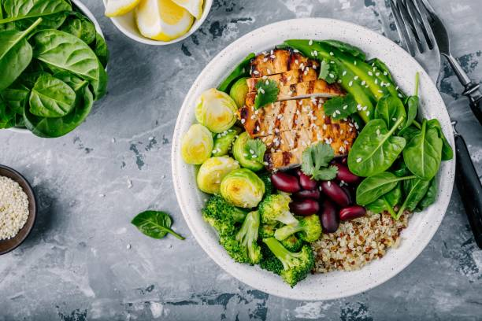
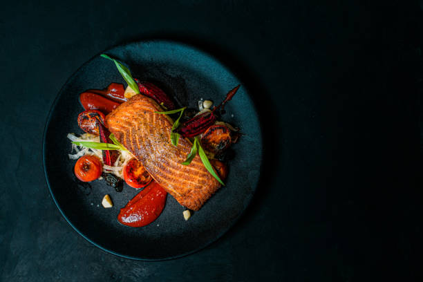
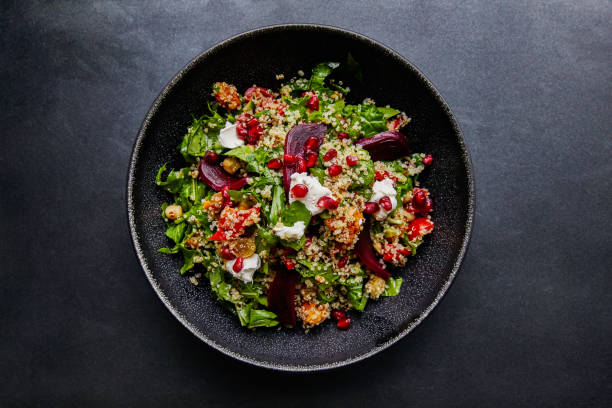
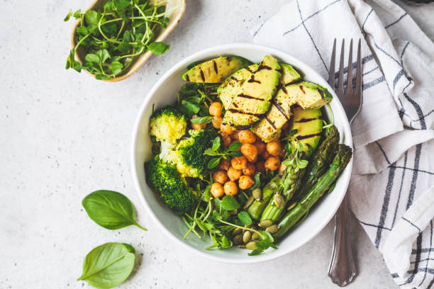

New dishes are here!
Buddha Bowl
grilled chicken, quinoa, spinach, avocado,
brussels sprouts, broccoli, red beans with
sesame seeds

Pepper Salmon
smoked salmon, grilled tomatoes, red peppers,
cabbage

Zucchini Spaghetti
zucchini noodles, homemade tomato sauce

Quinoa Salad
spinach, quinoa, beet root

Green Bowl
grilled avocado, broccoli, spinach, sunflower
seeds, asparagus, chickpeas
